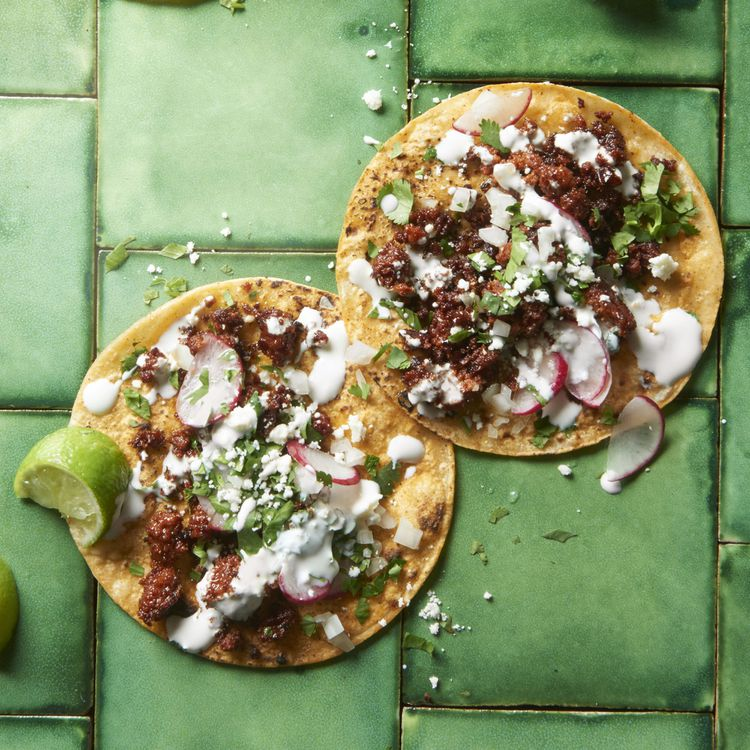

Easy Chorizo Street Tacos

Description
A fast, simple, and delecious 5-ingredient recipe for spicy food lovers. Chorizo and chipotle peppers give these street-style tacos some serious heat.
Made from chorizo, chipotle peppers, corn tortillas, onion, and cilantro. Easy as that.
Ingredients
- 1 chorizo sausage link, casing removed and meat crumbled
- 2 tablespoons chipotle peppers in adobo sauce
- 4 corn tortillas
- 2 tablespoons chopped onion, or to taste
- 2 tablespoons chopped fresh cilantro, or to taste (Optional)
Steps
- Combine crumbled chorizo and chipotle peppers in adobo sauce in a bowl.
- Heat a skillet over medium-high heat; add chorizo mixture and cook until crisp, 5 to 7 minutes.
- Transfer to a plate, reserving grease in the skillet.
- Heat tortillas in reserved grease in the skillet over medium heat until warmed, 1 to 2 minutes per side.
- Stack 2 tortillas for each taco, then fill with chorizo, onion, and cilantro.